Étudiante en 2ᵉ année de BTS SIO option SISR à INGETIS Paris. Passionnée par les réseaux, les systèmes et la cybersécurité.
Le BTS SIO (Services Informatiques aux Organisations) est un diplôme de niveau Bac+2 qui forme aux métiers de l'informatique en entreprise. Il propose deux spécialités :
Je suis étudiante en 2ᵉ année de BTS SIO, option SISR, à INGETIS Paris. J'ai choisi cette spécialisation car les réseaux et les systèmes informatiques m'ont rapidement passionnée — comprendre comment une infrastructure fonctionne, la configurer et la sécuriser, c'est ce qui me motive au quotidien.
Au cours de ma formation, j'ai acquis de nombreuses compétences, par exemple : l'installation de systèmes d'exploitation (Windows, Linux), la configuration réseau, l'administration de serveurs, la gestion d'Active Directory ou encore la maintenance informatique.
Après le BTS, je souhaite intégrer un bachelor en cybersécurité pour me spécialiser dans la protection des systèmes et des réseaux. Mon objectif est de travailler dans l'administration système et la sécurité informatique.
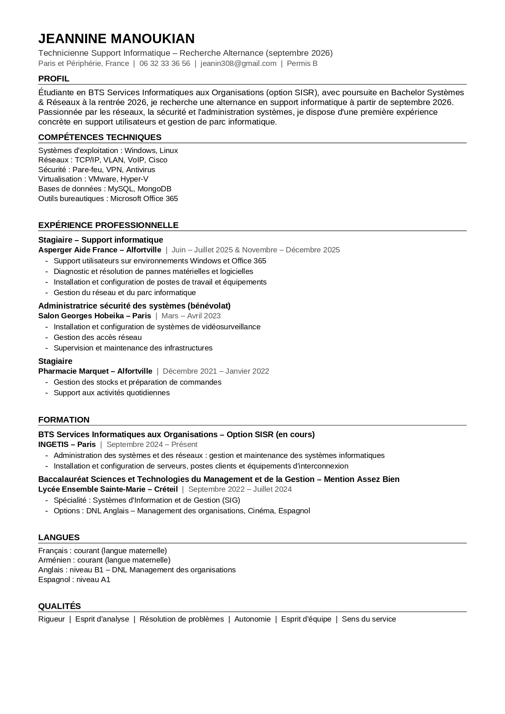
Stage de support informatique réalisé dans le cadre de ma 1ʳᵉ année de BTS SIO SISR.
Association d'accompagnement de personnes avec des troubles du spectre autistique. J'y ai assuré le support informatique interne et la gestion basique du réseau.
Missions réalisées
Compétences développées
Arrivée au bureau, lecture des emails et vérification des éventuelles remontées de problèmes de la veille. Ce matin, une employée signale que son poste ne s'allume plus depuis le matin.
Je me rends auprès de l'utilisatrice. Premier diagnostic visuel : le câble d'alimentation est bien branché, le voyant de l'écran est allumé. Je teste avec un autre câble d'alimentation — le poste redémarre. Cause identifiée : câble d'alimentation défectueux. Remplacement effectué et bon fonctionnement vérifié.
Installation d'un poste Windows 11 neuf pour un nouveau salarié. Étapes réalisées : installation de l'OS, création du compte utilisateur local, configuration de l'adresse IP statique selon le plan d'adressage du réseau de l'association, installation des logiciels nécessaires (Office, navigateur, antivirus).
Pause d'une heure.
Deux postes ne parviennent plus à accéder à Internet. J'exécute ipconfig pour vérifier la configuration réseau — les postes ont des adresses en 169.254.x.x (APIPA), ce qui indique que le serveur DHCP n'a pas attribué d'adresse. Je vérifie le routeur : un redémarrage suffit à rétablir la connexion. Les postes récupèrent une adresse valide.
Inventaire visuel des postes de l'association : vérification de l'état des câbles réseau, des prises RJ45 et des connectiques. Mise à jour du tableau de suivi du parc (marque, modèle, adresse IP de chaque poste).
Rédaction d'un court compte-rendu des interventions de la journée et transmission au responsable. Préparation de la liste des tâches pour le lendemain.
Concepts techniques que j'ai mis en pratique lors de mon stage et de mes projets BTS.
Identifiant numérique unique attribué à chaque équipement sur un réseau. Une adresse IP statique est fixe (configurée manuellement), une adresse dynamique est attribuée automatiquement par un serveur DHCP.
Protocole qui attribue automatiquement une adresse IP aux équipements qui se connectent au réseau. Sans DHCP, chaque poste doit être configuré manuellement. Quand il ne répond plus, les postes obtiennent une adresse APIPA (169.254.x.x).
Système qui traduit les noms de domaine (ex: google.com) en adresses IP compréhensibles par les machines. C'est l'annuaire d'Internet. Sans DNS, il faudrait connaître l'adresse IP de chaque site.
Service Microsoft qui centralise la gestion des utilisateurs, des ordinateurs et des droits d'accès dans une entreprise. Il permet à un administrateur de gérer depuis un seul serveur tous les comptes et les règles de sécurité du réseau.
Technologie qui permet de faire tourner plusieurs systèmes d'exploitation sur une seule machine physique. Un hyperviseur (comme VMware ou Hyper-V) crée des machines virtuelles isolées, utiles pour tester des configurations sans risque.
Stratégies de groupe (Group Policy Objects) dans Active Directory. Elles permettent d'appliquer des règles automatiquement à tous les postes d'un domaine : bloquer l'accès au panneau de configuration, imposer un fond d'écran, désactiver l'USB…
Projets techniques réalisés en cours de formation, dans des environnements virtualisés.
Déploiement d'une infrastructure client-serveur complète sous Windows Server, avec gestion centralisée des utilisateurs et des postes via Active Directory.
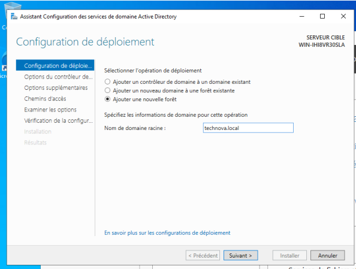
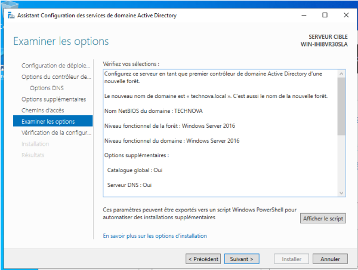
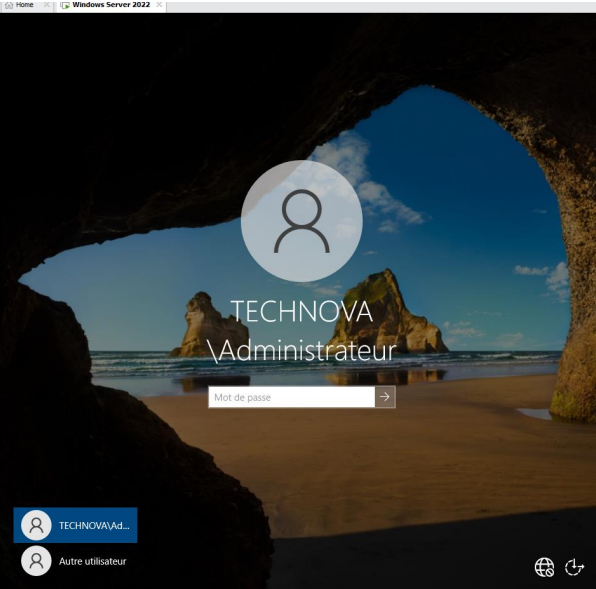
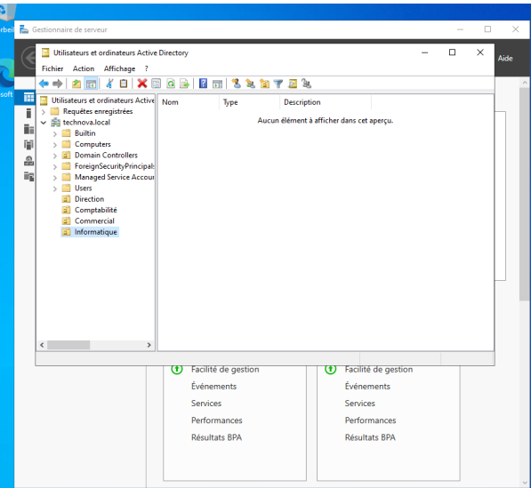
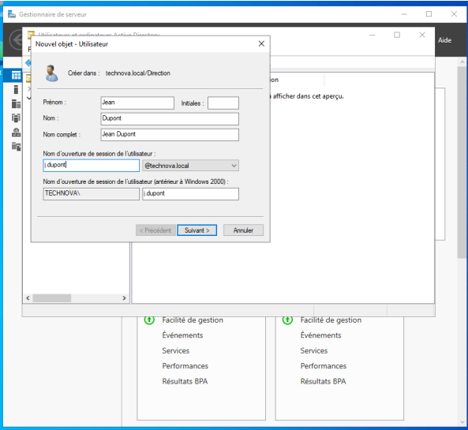
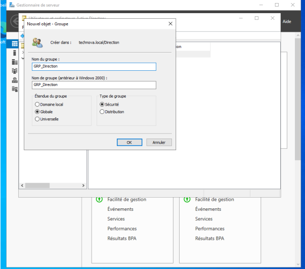
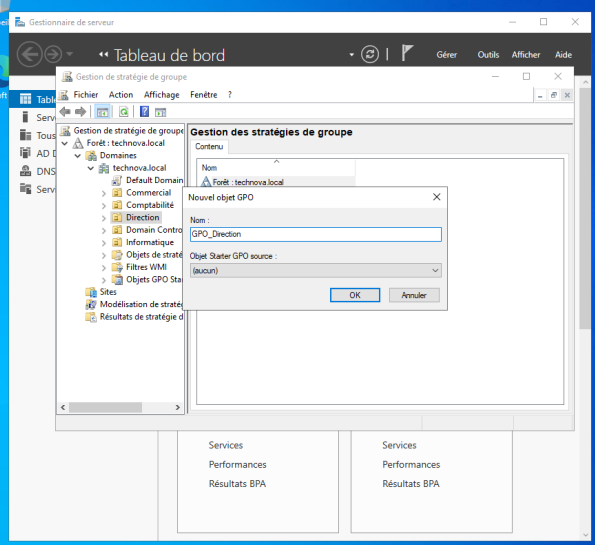
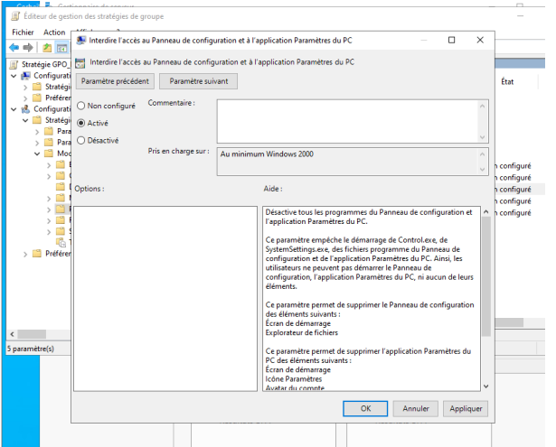
Conception et configuration d'une architecture réseau segmentée pour une PME, sur le simulateur Cisco Packet Tracer, afin de séparer les services et renforcer la sécurité.
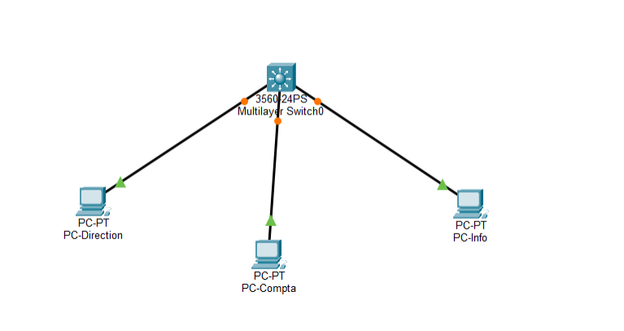
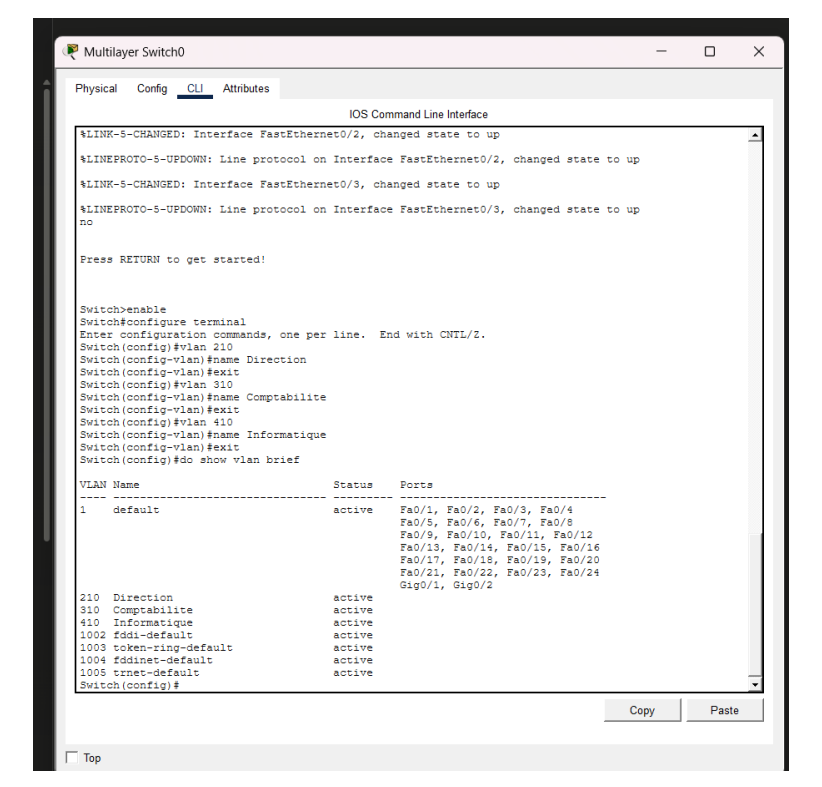
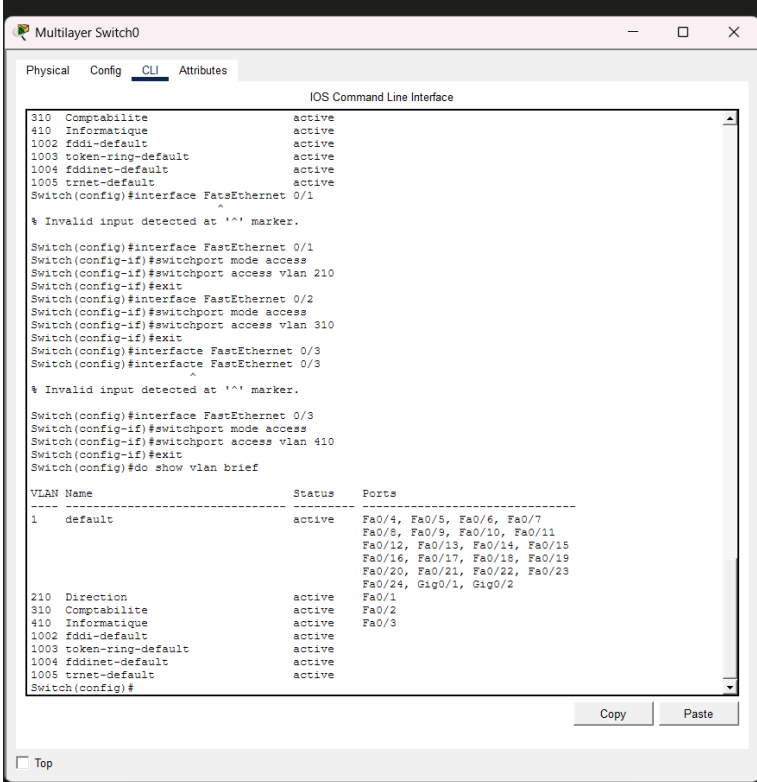
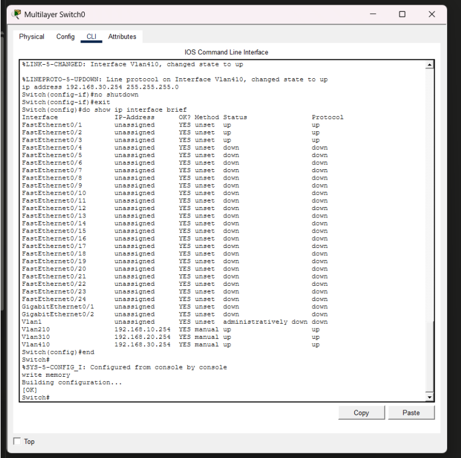
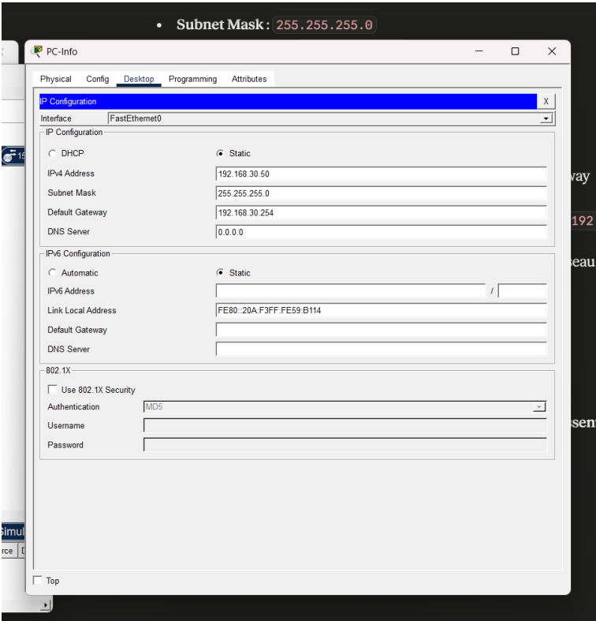
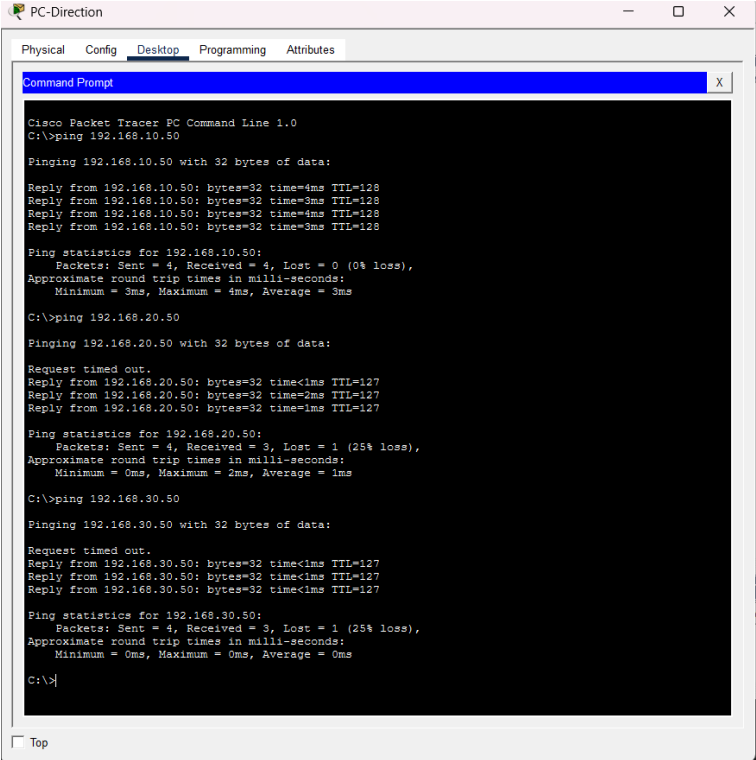
Compétences acquises lors de ma formation BTS SIO SISR, de mes projets en cours et de mon stage en support informatique.
Installation et administration d'un serveur Windows Server 2022 dans un environnement virtualisé. J'ai configuré les rôles serveur via le Gestionnaire de serveur : Active Directory, DNS, DHCP, et services de fichiers. Cette compétence a été mise en œuvre lors de mon projet BTS sur l'infrastructure réseau.
Mise en place d'un domaine Active Directory complet : création d'unités d'organisation, de comptes utilisateurs et de groupes. Intégration de postes clients Windows 10/11 au domaine. Déploiement de stratégies de groupe (GPO) pour sécuriser et uniformiser les postes du réseau.
Installation, configuration et maintenance de postes de travail sous Windows 10 et 11 lors de mon stage chez Asperger Aide France. J'ai pris en charge la préparation des postes (partitionnement, installation de l'OS, configuration réseau) et leur mise en service pour les utilisateurs.
Initiation à l'environnement Linux en cours de BTS : navigation dans le système de fichiers, gestion des droits et permissions, commandes de base (ls, cd, chmod, sudo…). Compétence en cours de développement dans le cadre de la formation.
Configuration d'adresses IP statiques sur des postes et serveurs, mise en place des services DNS (résolution de noms) et DHCP (attribution automatique d'adresses IP) dans le cadre du projet Active Directory. Ces services ont été configurés et testés sur des machines virtuelles.
Conception et configuration de VLAN sur le simulateur Cisco Packet Tracer pour segmenter un réseau d'entreprise. Configuration du switch en ligne de commande, affectation des ports et mise en place du routage inter-VLAN afin de séparer les services (Direction, Comptabilité, Informatique).
Utilisation des outils de diagnostic réseau intégrés à Windows pour identifier et résoudre
des problèmes de connectivité lors du stage. La commande ipconfig permet d'afficher
l'adresse IP, le masque de sous-réseau et la passerelle. ping teste la connectivité
entre les machines. Ces outils ont été utilisés quotidiennement pour dépanner les postes.
Utilisation de GLPI (Gestionnaire Libre de Parc Informatique) pour la gestion des tickets d'incidents. Cet outil permet de créer, suivre et clôturer des demandes d'intervention, assurant ainsi la traçabilité des interventions et la maintenance informatique du parc.
Assistance directe aux utilisateurs de l'association Asperger Aide France : écoute des problèmes, diagnostic, résolution ou escalade si nécessaire. J'ai développé une méthode structurée : analyser le problème → identifier la cause → proposer une solution → vérifier le bon fonctionnement. Cette expérience m'a appris à communiquer clairement avec des utilisateurs non-techniques.
La veille technologique consiste à se tenir informée des évolutions du domaine informatique pour rester à jour sur les outils, les systèmes et les bonnes pratiques professionnelles.
Je me concentre sur l'utilisation de l'intelligence artificielle dans le domaine de la cybersécurité : détection des cyberattaques par l'IA, automatisation de la sécurité des systèmes, risques liés aux nouvelles menaces (ransomware, phishing avancé) et protection des données.
Sources d'information en cybersécurité et informatique que je consulte régulièrement.
J'utilise Google Alerts pour automatiser ma veille. Des alertes sont configurées sur des mots-clés ciblés et me sont envoyées par email dès qu'un nouvel article est publié sur ces sujets.
🔗 Accéder à Google AlertsMots-clés surveillés :
Cette veille me permet de mieux comprendre les évolutions de la cybersécurité et de l'IA, de rester informée sur les nouvelles menaces et les solutions existantes, et de me préparer à mon projet professionnel orienté vers la sécurité des systèmes et des réseaux.